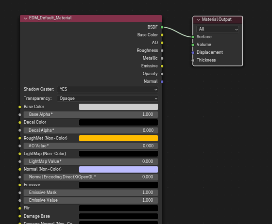

Exporting A Mesh to DCS
Preparing the Material
To export your first mesh into the .edm format, start with a blank blender cube, as seen below.
Switch to the shading tab, if the cube does not have a material by default, create one.

Next, We will need to configure the material nodes with the EDM Materials.
First, remove the default Principled BSDF node, but leave the Material Output Node.
Next, Either by pressing SHIFT + A or by clicking Add in the Node Editor, navigate to EDM Materials > Material - Default.

With the EDM_Default_Material Node in place, connect the BSDF point of the EDM material to the Surface point of the Material Output. An example of this can be seen below.

Exporting to EDM
We're now ready to export our cube to an .edm file!
Navigate to File > Export > Eagle Dynamics Model (.edm)
Then Name and save your file in your desired location by clicking export to EDM

Opening in ModelViewer
Open ModelViewer, and go to File > Load Model or CTRL + N
Navigate to your edm file, select it, then press load

You should now see a white cube, very similar to the image below.